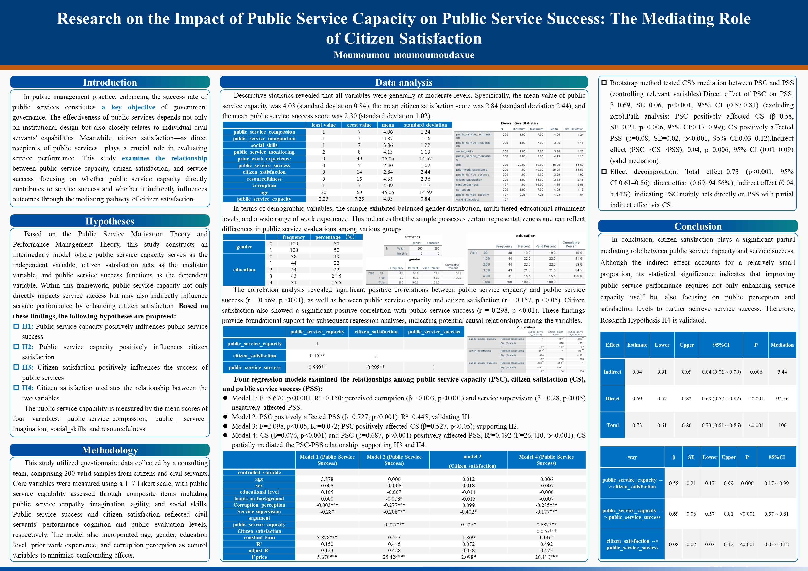

公共课题研究
学术写作 | 课题研究 | 数据分析

项目背景
专业课程需要基于真实案例和数据，研究公务员各类指标与其绩效之间的关联。
我的工作
负责研究方案策划，包括主题设定、流程设计、文案撰写、人员分工、执行跟进，确保小组任务顺利进行。
项目成果
- 完成课题报告初稿，获得老师好评
- 小组合作完成海报版图设计
- 全员数据分析技能得到有效提升
- 对公共管理与人力资源管理领域有了更深入的了解
策划思路
基于公共管理领域，选取公务员能力与动力、公共服务成功度两个主题，通过文献综述等研究方法，进行数据收集与分析，最终得出结论。
联系方式
邮箱：Zihan1927@Outlook.com
电话：+86-156-5537-9189/+852-4490-8056
微信：asakawa2134020115